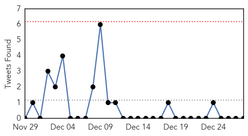
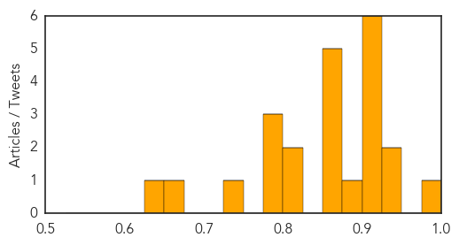

Unknown
30-Day Web Trend
30-Day Twitter Trend
0 alerts, 0 warnings

Article Locations

Article Confidences
Top Articles:
- 0.980
- Jaundice Shadow Over Khurda
- 0.942
- Hong Kong raises bird flu alert - Regional
- 0.937
- Bird flu takes four in Libya
- 0.917
- Chicago Tribune
- 0.917
- Chicago Tribune
- 0.917
- Chicago Tribune
- 0.917
- Chicago Tribune
- 0.917
- Chicago Tribune
- 0.917
- Chicago Tribune
- 0.878
- Hong Kong confirms first case of Bird Flu
- 0.866
- 'The Interview' generated $15 mln in four days with 2 mln downloads-Sony
- 0.866
- U.S.-led forces launch 13 air strikes in Syria, Iraq
- 0.866
- Obama briefed on missing AirAsia flight 8501
- 0.850
- NewsDaily
- 0.850
- NewsDaily
- 0.819
- Lyme disease debate leaves stricken family without answers
- 0.804
- SF Public Health Officials report rise in shigellosis cases among homeless people
- 0.798
- Poultry producers brace for bird flu fallout
- 0.789
- Hospitals swamped with patients as temperature dips
- 0.787
- Oman- Temperature likely to dip further, says Met office
- 0.730
- Miyazaki has another bird flu outbreak; prefectural, industry officials alarmed
- 0.662
- Rare births at local hospitals
- 0.626
- HUSM the only fully functioning hospital left in Kelantan
Top Tweets:
-
No tweets found for Dec 28, 2014